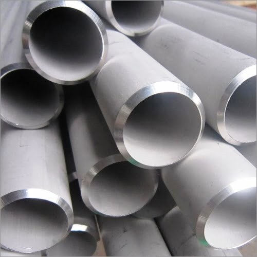
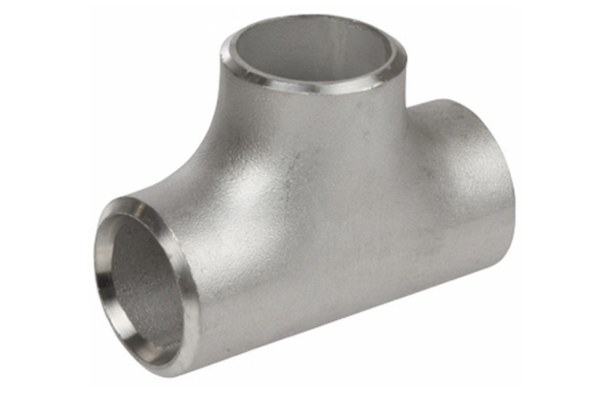
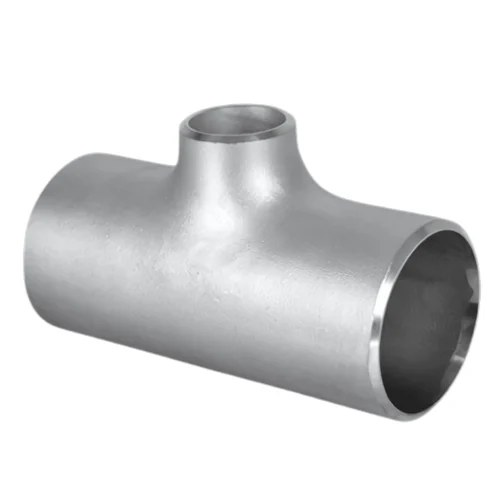
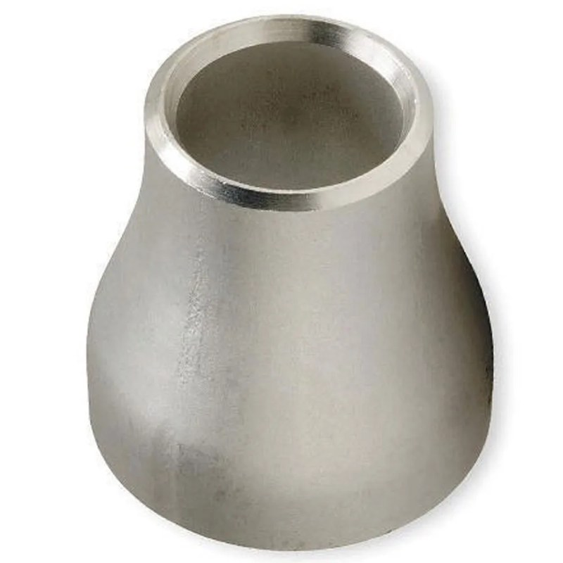
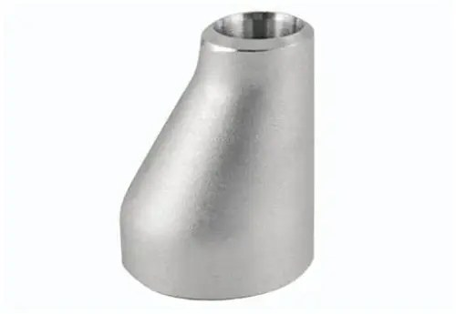
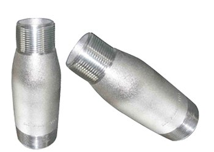
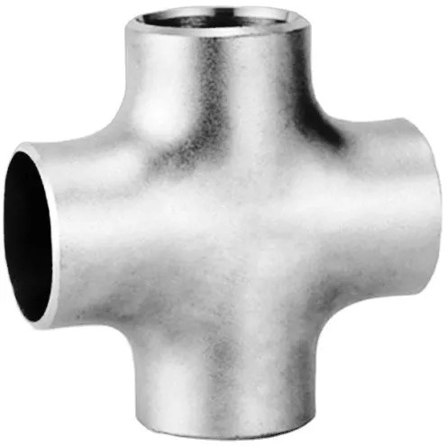
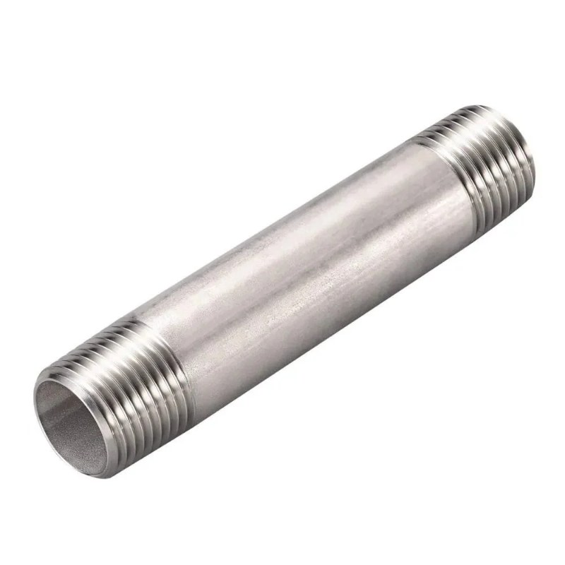

S.S Pipe ERW & Seamless
Sizes½" – 12"
- SCH10
- SCH20
- SCH40
- SCH80
- SCH160
- B16.9
Pipe, Fittings & Flanges · 12 products
Seamless and welded butt-weld elbows, tees, reducers and caps to ASME B16.9, SCH 10 to SCH 160. Ask Fakhri Tools for a quote on WhatsApp, by phone or at our trade counter in Al Quoz Industrial Area 3.

Sizes½" – 12"
Sizes½" – 24"
Sizes½" – 24"
Sizes½" – 24"

Sizes½" – 24"

Sizes¾" × ½" – 24" × 20"

Sizes¾" × ½" – 24" × 20"

Sizes¾" × ½" – 24" × 20"
Sizes½" – 24"

Sizes½" – 24"

Sizes½" – 12"

Sizes½" – 8" × 12"
S.S butt-weld fittings are made to ASME B16.9 in SCH10, SCH20, SCH40, SCH80 and SCH160 from ½" to 24": 45° and 90° elbows in long and short radius, equal and reducing tees, eccentric reducers, end caps. We also list S.S swage nipples. Reducing tees and reducers run from ¾" × ½" to 24" × 20". S.S crosses run from ½" to 12".
Concentric reducers and 180° long radius return bends are listed in both C.S and S.S. S.S pipe, ERW and seamless, comes in the same schedules from ½" to 12", with S.S long nipples up to 8" × 12". For M.S butt-weld fittings and pipe, see our carbon steel page.
Long radius (LR) elbows have a centre-to-face of 1.5 times the pipe size and give a smoother flow. Short radius (SR) elbows, at 1 times, save space. Use an eccentric reducer on pump suction, flat side up, so air does not collect. Match the fitting schedule to the pipe wall so the bores line up for welding.
For a quote, WhatsApp the fitting, size, schedule, C.S or S.S, and the quantity.
Choose LR for most lines. Use SR only where space is tight. Our S.S elbows are listed in both.
Concentric keeps the centre line and suits vertical runs. Eccentric keeps one side flat and is used on pump suction and pipe racks.
Yes. S.S pipe, ERW and seamless, is listed in SCH10 to SCH160 from ½" to 12". M.S and C.S pipe is listed in SCH STD to SCH160 from ½" to 12" on our carbon steel page.
Yes. M.S butt-weld elbows, tees, reducers and end caps in SCH STD to SCH160 up to 24" are on our carbon steel page, and C.S concentric reducers and return bends are listed here.
Send a photo of it, or its nameplate, on WhatsApp and we will tell you if we have it.